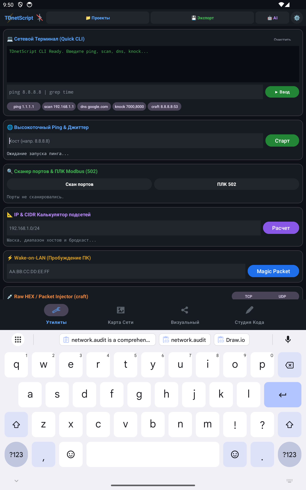
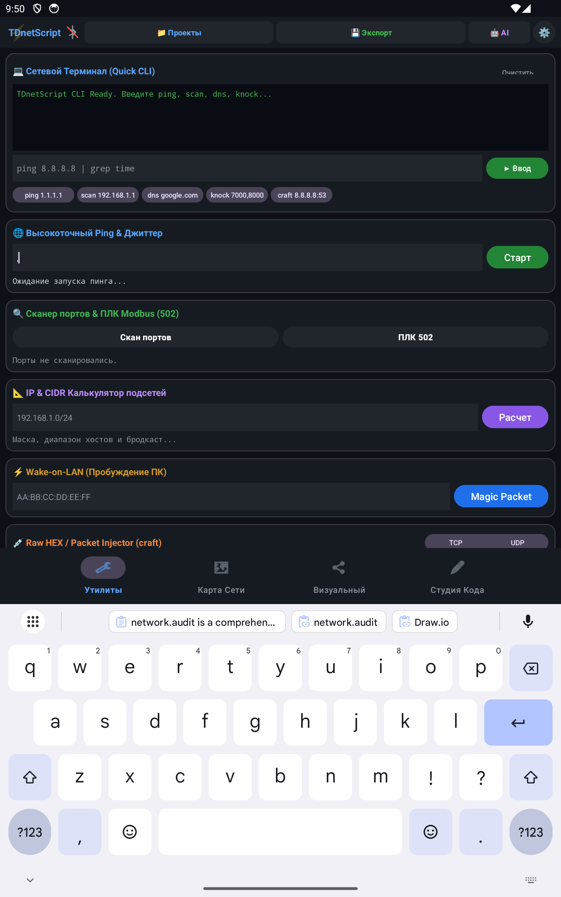
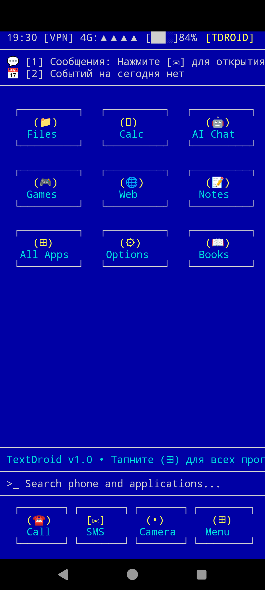
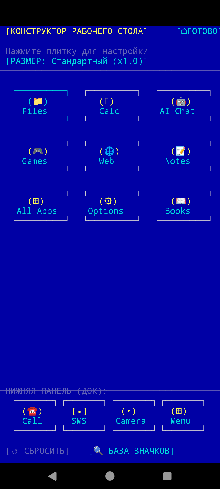
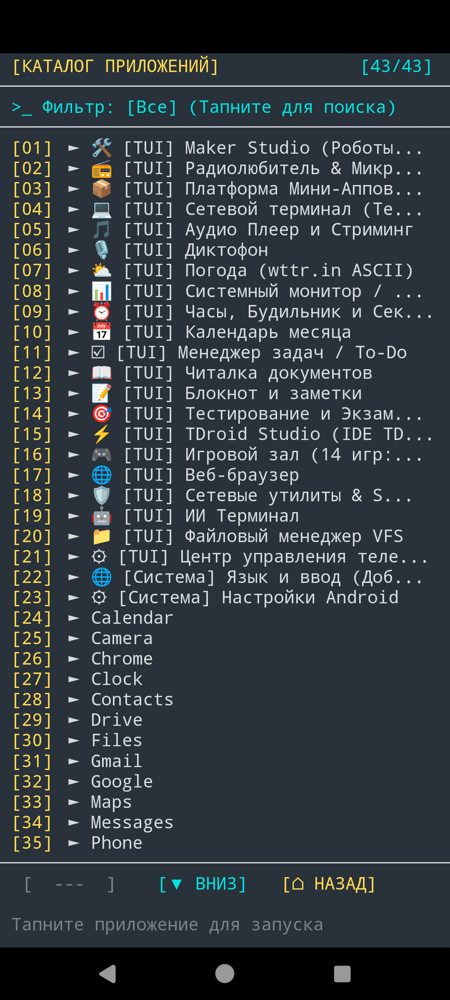
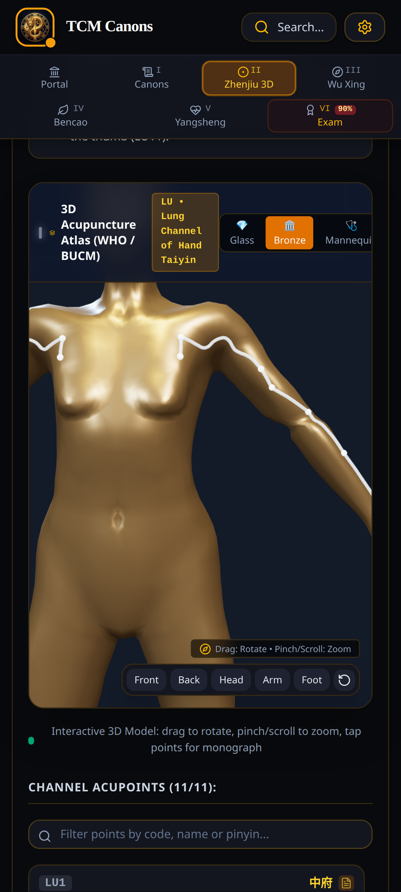
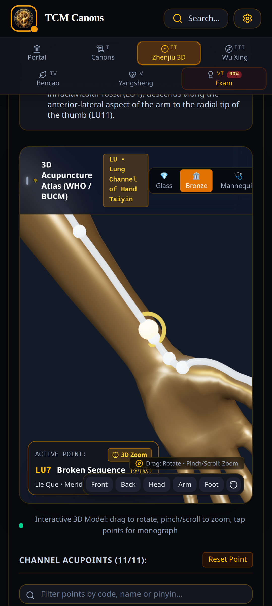
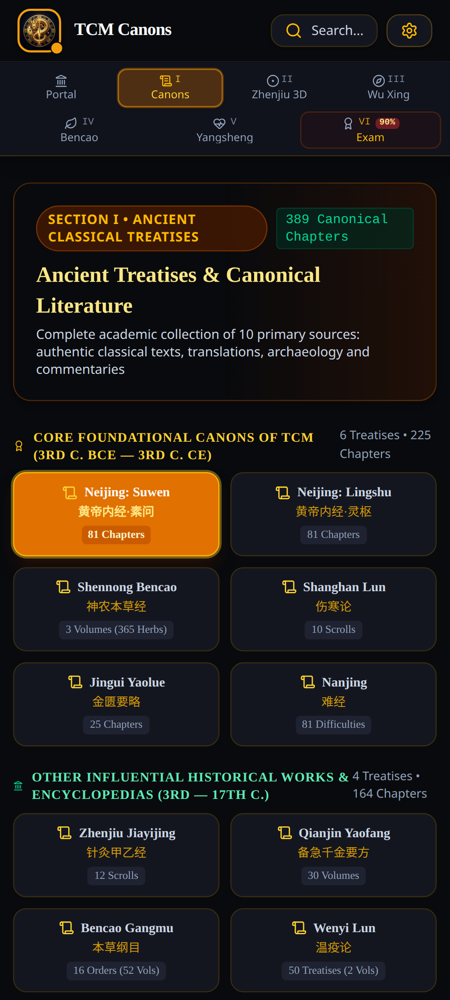

Инженерные TUI-системы, Языки программирования & Игры
Официальный портал разработчика: операционная текстовая среда Tdroid, встроенный язык TDScript, компилятор байткода .tbc и настольные игры.
👨💻 Об авторе и разработчике
Приветствую! Меня зовут Антон Михайлов. Моя инженерная философия — создание программных решений с экстремальной оптимизацией ресурсов: нулевой графический оверхед (0 KB VRAM), максимальная автономность мобильных устройств, чистая архитектура и полный контроль над аппаратурой без раздутых тяжелых фреймворков.
🔬 Специализация
Архитектура Android (Kotlin/Java), проектирование виртуальных машин и встраиваемых скриптовых языков (AST & байткод), TUI интерфейсы (псевдографика Turbo Vision/DOS), сетевые протоколы (UDP, TCP, LoRa, Modbus) и соревновательный игровой искусственный интеллект.
🌱 Принципы конфиденциальности
100% On-Device обработка данных. Никакой телеметрии, никаких скрытых трекеров и рекламных SDK. Все вычисления, пользовательские скрипты и персональные базы данных выполняются исключительно на вашем телефоне.
🛡️ Network Audit — Профессиональный аудит и диагностика сетей v1.0.1 • Android 16 • Открытое тестирование
Network Audit — универсальный инженерный комплекс для сканирования, картографирования и тестирования безопасности локальных (IT) и промышленных (OT / ICS) сетей прямо со смартфона или планшета Android.

⚡ Ключевые возможности и протоколы
🔍 Сканирование узлов и портов
Многопоточный поиск активных устройств в подсети, определение открытых портов (TCP/UDP), распознавание вендоров оборудования по MAC OUI и баннеров служб.
🗺️ Интерактивная карта топологии
Визуализация сетевой инфраструктуры с автоматической группировкой шлюзов, коммутаторов, серверов и рабочих станций с ручной расстановкой и экспортом схем.
🏭 Промышленный аудит (OT / ICS)
Инспекция ПЛК и промышленных протоколов: Modbus TCP, PROFINET, диагностика регистров, опрос датчиков и контроллеров автоматизации.
🐕 Непрерывный мониторинг (Watchdog Daemon)
Фоновая служба мониторинга задержки (ping), контроль стабильности критических узлов и обнаружение аномалий (включая защиту от ARP-spoofing) с уведомлениями.
📸 Интерфейс Network Audit


📱 Tdroid — Текстовый ретро-лаунчер для Android v1.0.8 • 3.1–3.4 МБ
Tdroid — это сверхлегкий текстовый ретро-лаунчер для Android в стиле Turbo Vision / DOS / VT100, созданный Антоном Михайловым. Он спроектирован на монохромном TUI-движке с нулевыми тяжелыми графическими библиотеками (0 KB VRAM) и рекордным потреблением памяти: всего 9–25 МБ ОЗУ (в 15–20 раз меньше обычных графических оболочек). Превращает смартфон в быстрый рабочий терминал инженера, системного администратора и любителя цифрового минимализма.
📦 Редакции приложения: Free и Pro
📱 TextDroid Free Бесплатно • 3.1 МБ
Идеально для повседневного использования без цифрового шума:
- Минималистичный текстовый интерфейс: нулевая нагрузка на GPU (0 KB VRAM).
- Мгновенный запуск приложений: быстрый поиск и чистый алфавитный каталог.
- Псевдографика и значки: 60+ символов для аккуратного оформления.
- Виджеты первой необходимости: часы, уровень заряда, системный монитор, базовые заметки.
- 100% On-Device приватность: без рекламы, аналитики и сетевых трекеров.
💎 Tdroid Pro Полная версия
Расширенный лаунчер и среда для инженеров:
- Искусственный интеллект и LLM (3 режима свободы):
• Встроенный быстрый ИИ: мгновенные ответы и генерация тестов «из коробки» без ключей.
• Свои API-ключи: прямое подключение Google Gemini, OpenAI ChatGPT, Claude, DeepSeek, OpenRouter.
• Локальные LLM (100% приватность): подключение к домашнему серверу Ollama или LM Studio по Wi-Fi без выхода в интернет. - Двухпанельный Т-Командер (T-Commander): файловый менеджер (память телефона, SD-карты, USB-OTG, FTP и WebDAV).
- Встроенная среда TDScript Studio: IDE для разработки и запуска микро-скриптов прямо на смартфоне.
- Компиляция и экспорт: сборка автономных APK, Linux-пакетов (.sh/.desktop), Windows (.bat) и байткода .tbc.
- Аппаратный доступ: GPS, камера, фонарик, синтез речи TTS, датчики движения, SQLite.
- Сетевой стек SecOps: сканер портов, ping, аудит Wi-Fi, прямое управление Modbus TCP и UDP.
- Пакет TUI-игр: 14 встроенных терминальных классических игр (Тетрис, Змейка, Сапер, Сокобан, Шахматы и др.).
📸 Галерея интерфейса Tdroid Pro

Главный экран (Turbo Vision)
Конструктор рабочего стола & Меню
Чистый каталог приложений [⚙] Менеджер буфера обмена с историей
Менеджер буфера обмена с историей
📱 Tdroid Pro Legacy — Версия для старых смартфонов (Android 5.0 – 6.0+)
Вторая жизнь для старых, медленных и архивных телефонов. Благодаря архитектуре без тяжелых графических библиотек Tdroid потребляет всего 15–25 МБ ОЗУ и плавно работает даже на старых одно- и двухъядерных процессорах MediaTek и Snapdragon без нагрева и подтормаживаний.
🧠 Нейросети и искусственный интеллект на старых устройствах: Большинство современных приложений с ИИ требуют новейшие версии Android и мощное железо. Благодаря Tdroid владельцы раритетных смартфонов наконец-то получают полноценный доступ к современным LLM (нейросетям) — встроенный ИИ-чат и быстрые команды работают даже на устройствах десятилетней давности без устаревших ограничений веб-браузеров!
- Искусственный интеллект (LLM): Интегрированный ИИ-чат и команда
ai <вопрос>прямо из терминала на смартфонах с Android 5.0+. - Все включено: Двухпанельный Т-Командер (T-Commander с поддержкой SD-карт, FTP, WebDAV), Заметки, Ридер TXT, Задачи, Оффлайн калькулятор, IDE TDScript и 14 TUI-игр.
- Полная автономность: Работает 100% оффлайн без Google Play Services и сервисов Google.
- Максимальное энергосбережение: Монохромный чёрный фон экономит до 40% батареи.
- Совместимость: Android 5.0–5.1 Lollipop / Android 6.0 Marshmallow и новее (API 21+).
📖 Инструкция по установке на старый смартфон:
- Нажмите зеленую кнопку «Скачать Tdroid Pro APK для Android 5–6» выше прямо со смартфона (или скачайте на ПК и скопируйте в телефон через USB).
- Откройте встроенный «Проводник» / «Файлы» на телефоне и перейдите в папку Download (Загрузки).
- Нажмите на загруженный файл
Tdroid-Pro-Legacy.apk. - Если система предупредит об установке: нажмите «Настройки» → активируйте «Неизвестные источники» (Разрешить установку приложений не из Play Market).
- Нажмите «Установить». После установки нажмите кнопку «Домой» и выберите Tdroid в качестве основного лаунчера «Всегда».
⚡ TDscript Core 1.1 / TDModules v1.4.0 — Универсальная платформа сценарного управления для микросхем, робототехники и IoT RELEASE 1.4.0 (Core 1.1)
TDscript (TextDroid Script) — компактная межплатформенная программная экосистема и легковесный детерминированный язык сценарного управления, созданный Антоном Михайловым. Экосистема эволюционировала из скриптового движка лаунчера в универсальную многоуровневую платформу автоматизации (Device & Chip Orchestration Platform): она связывает воедино микросхемы и физические шины (I2C, SPI, UART, CAN), промышленные контроллеры (Modbus PLC, OPC UA), робототехнические комплексы (ROS 2/DDS) и автономных ИИ-агентов с нулевым оверхедом видеопамяти (0 KB VRAM / Headless).
1. Архитектурный базис: Разделение Core, Host SPI, CapabilityScope и Студия
В TDscript Core 1.1 реализовано строгое многоуровневое разделение: чистое ядро абстрагировано от конкретного железа и операционной системы, а доступ к периферии гранулирован через аппаратную матрицу прав и изоляцию пространств адресов:
┌────────────────────────────────────────────────────────────────────────┐
│ TDSCRIPT CORE ENGINE (v1.1.0 / Core 1.1) │
│ Лексер (109 языков) • Парсер • LString • Step Limit (10M) • HostSPI │
└───────────────────────────────────┬────────────────────────────────────┘
│ CapabilityScope & Watchdog Fail-Safe
┌───────────────────────────┼───────────────────────────┐
▼ ▼ ▼
┌───────────────┐ ┌───────────────┐ ┌───────────────┐
│TDscript Studio│ │ TDRobotics │ │ Tdroid / TUI │
│ Linux/Android │ │ Engineering │ │ Terminal OS │
│ • AI Agentic │ │ • Circuit CAD │ │ • UI.window() │
│ • Sandbox I2C │ │ • DIP AutoGen │ │ • PHONE.torch │
│ • Modbus PLC │ │ • Safety Gate │ │ • SQLite/VFS │
└───────────────┘ └───────────────┘ └───────────────┘🌐 Нативная мультиязычность (109 языков)
Директива language: <код>; на уровне лексера. Двусторонний посимвольный проектор CodeProjector (State Machine) переключает отображение ключевых слов (RU 🇷🇺, EN 🇬🇧, DE 🇩🇪) на лету без риска повреждения строковых литералов и комментариев. Защищённый тип LString исключает конкатенацию (ошибка TDS_E105) для сохранения целостности грамматики.
🛡️ Гранулярная изоляция CapabilityScope
Аппаратная песочница с белыми списками периферии. Скрипт изолирован не только на уровне прав, но и по физическим координатам: разрешённые адреса шины I2C (например, только 0x76 для Bosch BME280), диапазоны регистров Modbus PLC (100..200) и порты Serial. Любая попытка доступа вне Scope пресекается хостом.
⚡ Fail-Safe Watchdog и Защита от циклов
Аппаратный сторож WATCHDOG.feed() и системный сброс WATCHDOG.emergencyStop(). В рантайме включён строгий лимит шагов (maxSteps = 10_000_000L): при попытке бесконечного цикла хост автоматически инициирует аварийную остановку приводов и выбрасывает TDS_E106_STEP_LIMIT_EXCEEDED.
🤖 Автономный ИИ-агент (Agentic Loop)
Встроенный замкнутый цикл разработки: Discovery (probe()) ➔ Генерация кода по промпту ➔ Тестирование в AiHardwareSandbox ➔ Захват JSON-ошибок CompilerErrorDiagnostic ➔ Самоисправление кода (до 3–5 итераций). Поддержка локальных серверов Ollama и LM Studio без внешних библиотек.
🛠️ Кроссплатформенная IDE TDscript Studio
Единая среда разработки для Linux, Windows и Android: десктопное приложение на Compose Desktop (сборка в автономный Linux JAR), мобильное приложение Android (APK 5.5 МБ с поддержкой USB-OTG и BLE) и виртуальная песочница симуляции чипов BME280 и ПЛК Modbus.
⚙️ Байткод-компилятор (.tbc) и Безопасность
Компиляция исходного AST в бинарный поток опкодов. Исходный код удаляется из пакета, уменьшая размер до 2–10 КБ. Поддержка цифровых подписей автора (Ed25519), контроль целостности через SHA-256 и лицензионные токены.
2. Расширенная матрица разрешений безопасности (Capabilities 1.1)
| Мандат (Capability) | Битовый флаг | Контролируемые операции и аппаратные шины |
|---|---|---|
NET_READ |
0x0001 |
HTTP GET запросы, чтение DNS, опрос сетевой статистики. |
NET_SCAN |
0x0002 |
Сканирование портов, поиск хостов в подсети (ARP/Subnet Discovery). |
PLC_READ |
0x0004 |
Чтение регистров промышленных контроллеров Modbus TCP/RTU. |
PLC_WRITE |
0x0008 |
Запись регистров Modbus TCP/RTU, отправка команд автоматике. |
BT_ACCESS |
0x0010 |
Подключение и обмен данными по Bluetooth Classic (SPP) и BLE GATT. |
HARDWARE |
0x0020 |
Управление фонариком, вибромотором, чтение датчиков телефона. |
UI_CORE |
0x0040 |
Отображение TUI окон, прогресс-баров и диалогов оператора. |
BACKGROUND |
0x0080 |
Работа скрипта в режиме системного демона (Watchdog Service). |
I2C_READ |
0x0100 |
Чтение регистров микросхем по шине I2C (с проверкой CapabilityScope). |
I2C_WRITE |
0x0200 |
Запись байтов конфигурации в микросхемы по шине I2C. |
SPI_TRANSFER |
0x0400 |
Аппаратный обмен данными по шине SPI (MOSI/MISO/CLK/CS). |
SERIAL_RAW |
0x0800 |
Прямой доступ к COM/TTY портам и адаптерам USB-UART. |
CAN_BUS |
0x1000 |
Прием и передача фреймов автомобильной и промышленной сети CAN. |
ROBOT_MOTION |
0x2000 |
Команды перемещения манипуляторов, захватов и платформ (AMR). |
ROBOT_OVERRIDE |
0x4000 |
Экстренное вмешательство в кинематику и аварийный сброс (E-Stop). |
DRIVER_INSTALL |
0x8000 |
Динамическая установка манифестов драйверов оборудования. |
3. Справочник прикладных API модулей TDscript Core 1.1
| Модуль | Метод API | Описание и возвращаемое значение |
|---|---|---|
| Шина I2C | I2C.read(addr, reg, len) / I2C.write(addr, reg, data) |
Транзакции по шине I2C с валидацией адреса в CapabilityScope. |
| Последовательный порт | SERIAL.read(port, len) / SERIAL.write(port, data) |
Прямой обмен данными с USB-UART / COM-портами микроконтроллеров. |
| Промышленный Modbus | PLC.modbusRead(ip, reg) / PLC.modbusWrite(ip, reg, val) |
Чтение и запись регистров автоматики SCADA/PLC контроллеров. |
| Сторож и Безопасность | WATCHDOG.feed() / WATCHDOG.emergencyStop() |
Сброс таймера сторожа и мгновенная аппаратная остановка линий. |
| Локализация строк | L"MSG_ID:Текст по умолчанию" |
Символический строковый ресурс (прямой + запрещён, защита TDS_E105). |
| Инспекция шин | HostSPI.probe() |
Динамическое сканирование подключенных USB, I2C, BLE и TCP шлюзов. |
| Сетевой HTTP | TD.httpGet(url) / TD.httpPost(url, body, type) |
Сетевые вызовы REST API и обмен JSON-пакетами. |
| Пинг сети | TD.ping(host) / TD.udp(host, port, data) |
Проверка доступности хоста и отправка датаграмм (ESP32, Arduino). |
| Bluetooth | BT.connect(addr) / BT.send(msg) / BT.readLine() |
Беспроводное управление периферией и контроллерами. |
| База данных SQLite | TD.dbExec(sql) / TD.dbQuery(sql) |
Локальное реляционное хранение данных и телеметрии. |
| Псевдографика TUI | TD.window() / TD.button() / TD.progressBar() |
Оконный интерфейс оператора Turbo Vision в консоли Tdroid. |
4. Интегрированная среда TDscript Studio и Автономный ИИ-агент
Для разработки скриптов и отладки периферии без риска повреждения реального оборудования создана кроссплатформенная среда TDscript Studio (Linux, Windows, Android):
🖥️ Desktop IDE (Compose Desktop)
Полноценное оконное приложение для Linux и Windows с панелью живого переключения языков кода (RU/EN/DE), раздельным экраном редактора, монитором регистров Modbus и шин I2C. Доступен как запуск через Gradle, так и автономный дистрибутив tdscript-studio-linux-x64-1.1.0.jar.
📱 Android Mobile Edition (APK 5.5 МБ)
Мобильное рабочее место инженера прямо «в поле». Поддерживает аппаратный интерфейс AndroidHostSPI с прямым доступом к USB-OTG преобразователям и беспроводным BLE-сенсорам либо работу в безопасном режиме симулятора.
🧪 Аппаратная песочница AiHardwareSandbox
Эмулирует микросхему Bosch BME280 (адрес 0x76, регистр Chip ID 0xD0 -> 0x60, калибровочные регистры температуры/давления) и промышленный шлюз Modbus PLC Gateway (регистр 100 = 24.5°C, регистр 101 = статус насоса).
🔄 Цикл Agentic Loop: Генерация ➔ Тест ➔ Автоисправление
Встроенный ИИ-агент подключается к локальным серверам (Ollama, LM Studio) по OpenAI-совместимому протоколу. Агент автоматически получает снимок оборудования (Discovery JSON), генерирует код, запускает его в песочнице, и при ошибках (например, выход за пределы Scope или ошибка синтаксиса) сам исправляет код за 1–3 итерации.
5. Практические примеры кода
Пример 1: Мультиязычный скрипт на русском языке (Чтение BME280 и ПЛК Modbus)
language: ru;
// 1. Адрес микросхемы Bosch BME280 (0x76 = 118 в десятичном виде)
пусть bmeAddress = 118
// 2. Чтение температуры теплоносителя и статуса насоса по Modbus TCP
пусть boilerTemp = PLC.modbusRead("127.0.0.1", 100)
пусть pumpStatus = PLC.modbusRead("127.0.0.1", 101)
если (boilerTemp > 240 && pumpStatus == 1) {
print("Котел в рабочем режиме. Опрос климатического датчика...")
// 3. Чтение идентификатора чипа BME280 (регистр 0xD0, длина 1 байт)
пусть chipId = I2C.read(bmeAddress, 208, 1)
print("BME280 Chip ID получен успешно")
// 4. Подтверждение сторожевого таймера безопасности
WATCHDOG.feed()
} иначе {
print("Внимание: аварийный перегрев или остановка насоса!")
WATCHDOG.emergencyStop()
}Пример 2: Канонический сторож сетевого шлюза и локализованное оповещение
// 1. Проверка доступности шлюза сети
let gateway = "192.168.1.1"
if (!TD.ping(gateway)) {
TD.torch(true)
TD.vibrate(300)
// 2. Локализованное сообщение (тип LString)
let alertMsg = L"ALERT_GW_FAIL:Внимание! Потеря связи со шлюзом автоматики."
print(alertMsg)
// 3. Аварийный сигнал в промышленный регистр ПЛК
PLC.modbusWrite("192.168.1.50", 100, 1)
} else {
// 4. Отправка телеметрии батареи на сервер мониторинга
let payload = JSON.stringify({ device: "Tdroid-Guard", bat: TD.battery() })
TD.httpPost("https://api.internal/telemetry", payload, "application/json")
}6. Статус и Roadmap экосистемы
🟢 Зафиксировано в TDscript Core 1.1 / TDModules v1.4.0 (Stable)
- Многоуровневый стек оборудования: выделены слои Driver -> Protocol -> Transport API с методами
I2C.read/write,SERIAL.read/write. - Гранулярный контроль
CapabilityScope: изоляция адресов I2C (0x76, 0x77), USB VID:PID и диапазонов регистров Modbus от вмешательства соседних скриптов. - Двухуровневая мультиязычность (109 языков): директива
language:;с Unicode-распознаванием ключевых слов в лексере без порчи строк/комментариев + типLString. - Аппаратный Watchdog & Fail-Safe: метод
WATCHDOG.feed(), аварийный остановWATCHDOG.emergencyStop()и лимит шаговmaxSteps = 10_000_000L. - Динамическое обнаружение адаптеров: метод
HostSPI.probe()для инспекции подключённых шин BLE, USB, I2C и Modbus. - Среда TDscript Studio (Desktop & Android): кроссплатформенная IDE, аппаратная песочница
AiHardwareSandboxи замкнутый цикл ИИ-агентаAgentic Loop.
🟡 В разработке: TDscript Robotics & IoT SDK (v1.5 Roadmap)
- Robotics SDK (
ROBOT.*): адаптер ROS 2 / DDS, кинематика манипуляторов (Linear / Joint), захваты и мобильные платформы (AMR). - Device Abstraction: унифицированные команды оборудования верхнего уровня (камеры, конвейеры, сенсоры).
- Расширенная матрица Capabilities:
ROBOT_READ,ROBOT_MOVE,ROBOT_GRIP,ROBOT_SPEED_OVERRIDE,ROBOT_AUTONOMOUS. - Событийная модель устройств: асинхронные подписки на телеметрию и датчики без блокировки Event Loop.
- Пилотная роботизированная ячейка: демонстратор Pick-and-Place (Робот + Modbus PLC + Датчики + Мобильный TUI пульт).
🃏 Карточная игра «Семёрки и Девятки» (Sevens & Nines) Desktop & Android
Кроссплатформенный карточный симулятор и соревновательная стратегия с поддержкой классических мировых правил и раскладок:
- Русская «Девятка» — традиционная колода из 36 карт с раскладкой от девяток в обе стороны.
- Международные «Семёрки» (Parliament / Fan Tan) — полная колода из 52 карт, динамичная тактика блокировки ходов соперников.
- Fan Tan (Card Dominoes) — соревновательный режим с банком, фишками и штрафами за пропуск хода.
Особенности и движок игры
🤖 Продвинутый искусственный интеллект
Интеллектуальные боты с анализом рук соперников и стратегическим удержанием карт для перехвата инициативы.
🎴 Индивидуальная настройка
8 встроенных дизайнерских рубашек карт + загрузка собственных картинок, выбор цвета сукна (Изумруд, Сапфир, Бордо, Графит).
🔊 Процедурный звук
Аудиодвижок с реалистичными звуками сдачи карт, стука фишек и победных аккордов без утяжеления размера игры.
☯️ Каноны ТКМ — 3D-атлас акупунктуры, монографии меридианов и первоисточники Android • BUCM & WHO Standard
«Каноны ТКМ» (TCM Canons) — фундаментальный интерактивный медицинский и академический справочник по Традиционной Китайской Медицине, созданный на основе канонических трактатов («Хуан-ди Нэй-цзин», «Нань-цзин») и современных стандартов Пекинского университета традиционной китайской медицины (BUCM) и ВОЗ (WHO).
Приложение работает полностью автономно (100% Offline), без рекламы, с соблюдением полной конфиденциальности персональных данных и выбором аутентичных визуальных стилей оформления (Императорский Нефрит, Бронза, Золото, Киноварная печать, Даосский талисман, Тушь, Минимализм).
Ключевые модули и возможности
🧘 3D-атлас акупунктуры (Zhenjiu 3D)
Высокоточная трёхмерная модель тела с визуализацией 14 главных каналов и 361 классической точки. Интерактивное вращение, масштабирование, выбор текстур (бронзовая статуя, стекло, манекен).
📋 Канонический паспорт 10 параметров
Исчерпывающее досье каждой точки: иероглифика и этимология, категория (Шу-точки, Юань, Ло, Си), топография в пропорциональных цунях, анатомия, функции ТКМ, цитаты трактатов, клинические показания, техника укола, мокса и предостережения.
🌊 Монографии 14 меридианов
Полный анатомический ход внешних и внутренних ветвей с анализом 40 канонических глаголов действия, дифференциальная диагностика синдромов Ши-Дун и Суо-Шэн, правила У-Син «Мать-Дитя» (Нань-Цзин 69).
📜 Библиотека древних канонов
Оригинальные древнекитайские тексты «Су-вэнь», «Лин-шу», «Нань-цзин», «Шэнь-нун бэнь-цао цзин» с параллельным переводом и академическими комментариями.
🌿 Фитотерапия и формулы (Бэнь-Цао)
Каталог целебного сырья традиционной фармакопеи, классические прописи («Шан-хань Лунь»), свойства, характер, вкус и тропность к меридианам.
🌌 Космология и Хронопунктура
Учение о Пяти Стихиях (У-Син), Небесные стволы и Земные ветви (У-Юнь Лю-Ци), циклический расчёт открытых точек по методикам Цзы-У Лю-Чжу и Лин-Гуй Ба-Фа.
Интерфейс и 3D-модель приложения

Интерактивный 3D-манекен и проекция меридиана
Фокус камеры на акупунктурной точке и паспорт параметров Главный портал с выбором восточных стилей оформления
Главный портал с выбором восточных стилей оформления

Чтение первоисточников и канонов Пять Стихий, Стволы и Ветви
Пять Стихий, Стволы и Ветви
 Каталог трав и классических формул
Каталог трав и классических формул
⚖️ Impressum (Юридическая информация)
Angaben gemäß § 5 DDG (Сведения согласно закону ФРГ):
Anton Mykhailov
Software- & Spieleentwicklung
Rudolf-Diesel-Straße 21b
38820 Halberstadt, Deutschland (Германия)
Контактные данные:
E-Mail: drmykhailov@gmail.com
Телефон: +49 172 9735840
Налогообложение (Umsatzsteuer):
Gemäß § 19 UStG wird keine Umsatzsteuer erhoben und ausgewiesen (Статус малого предпринимателя / Kleinunternehmerstatus согласно законодательству Германии).
Ответственный за содержание согласно § 18 Abs. 2 MStV:
Anton Mykhailov, Rudolf-Diesel-Straße 21b, 38820 Halberstadt
🔒 Datenschutzerklärung (Политика конфиденциальности)
1. Ответственное лицо:
Anton Mykhailov, Rudolf-Diesel-Straße 21b, 38820 Halberstadt, E-Mail: drmykhailov@gmail.com
2. Мобильные приложения и игры (Tdroid Free, Tdroid Pro, Sevens & Nines, TCM Canons):
- Отсутствие регистрации: Наши программные приложения и игры не требуют учетных записей, авторизации и ввода личных данных.
- 100% Локальное хранение (On-Device Privacy): Заметки, скрипты TDScript, базы данных SQLite, настройки лаунчера и игровые сохранения хранятся исключительно на вашем личном устройстве.
- Никакой телеметрии и рекламы: Мы не ведем учет действий пользователя, не внедряем сторонние рекламные сети (AdMob, Meta и др.) и не передаем аналитику третьим лицам.
- Права пользователя: В соответствии с нормами GDPR (DSGVO), вы имеете полный суверенитет над своими данными с правом их немедленного локального удаления.